Comparison of five regions for January and February: daytime temperatures, driving times, restaurants, local atmosphere, dog access and rental requirements.
5 coastal regions25 location photographs2? possible stays
The preferences are based on Cap Ferret: beaches, restaurants, nearby dog walks and an understated, cosmopolitan setting. The remaining five regions meet the 16°C cutoff using their stated regional climate references. These are average daytime highs, not a guarantee that every day reaches 16°C; no choice here promises dependable 20–22°C winter days.
Summary / temperature and local conditions
Initial assessment. Dénia and Altea.
Town and restaurant evidence
Dénia has a permanent food market and documented winter restaurant activity. Altea has an old town, galleries and an arts centre. Current evidence supports investigating Dénia first; neither town has a verified rental meeting all requirements.
Proximity to Benidorm does not establish either town’s atmosphere. British pub dominance and winter visitor nationality shares have not been measured. Both towns have international residents and visitors.
The warmer Spanish reference stations average around 17–18°C daily highs. The eastern Algarve is around 16–17°C. The shortlist now requires a regional average daytime high of at least 16°C in both January and February.
A monthly average daily high averages each day’s maximum temperature. It is not an all-day temperature or a forecast. Station location and climate period limit comparisons of small differences. Wind exposure, sunshine and heating also affect comfort.
Average daytime highs: January / February · drive from Coquelles terminal
Driving figures were checked in Google Maps on 15–16 September 2026, avoiding ferries with tolls/highways allowed. They exclude the UK leg, Channel crossing, breaks and nights. They are current routing results, not winter traffic predictions. The earlier southern Spain / Portugal references are just over a strict 20-hour cap. Earlier routes · New routes.
Two-stay option / dates undecided
Option: split the stay between two locations.
Two locations would allow a comparison of town life, coast access and restaurants. No pairing, dates or length of stay has been selected.
First location under consideration: Dénia
The centre, Baix la Mar and the area near Marineta Cassiana require separate property searches. Each house must have a private garden and verified walking routes to restaurants and the coast. Outer Les Rotes properties may be farther from central services.
Second location: not selected
La Herradura has a bay and promenade. Tavira has a historic centre and riverfront, with separate access to ocean beaches and a longer drive. Winter restaurant availability, the immediate area and rental locations need further checks in both.
Altea could be visited during a Costa Blanca stay before deciding on a separate rental.
A two-location stay requires a transfer journey and two accommodation checks. It does not establish a temperature advantage. Destinations exceeding 20 hours remain comparisons if that driving limit is strict.
Regional details / five photographs per region
Regions and photographs.
Five photographs per region show towns, waterfronts, beaches and surrounding landscape. Each caption identifies the location.
Photographs span different years and seasons. They illustrate places, not typical winter weather or current opening. Tap any photograph to view it larger.
01 / Dénia: candidate for one stay
Costa Blanca
Dénia · Altea
17.0 / 17.6°CJanuary / February average highsAlicante city · 1981–2010
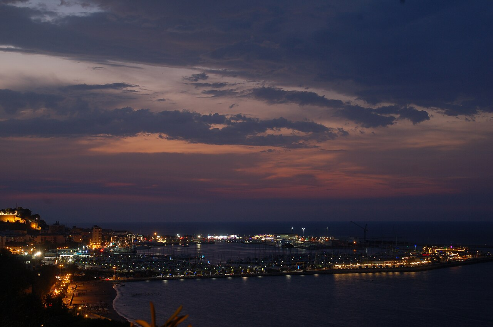
Dénia harbour and castle at dusk. 2017-08-08 21:30:08. Pau Nofuentes Sendra / Commons, CC BY-SA 4.0.
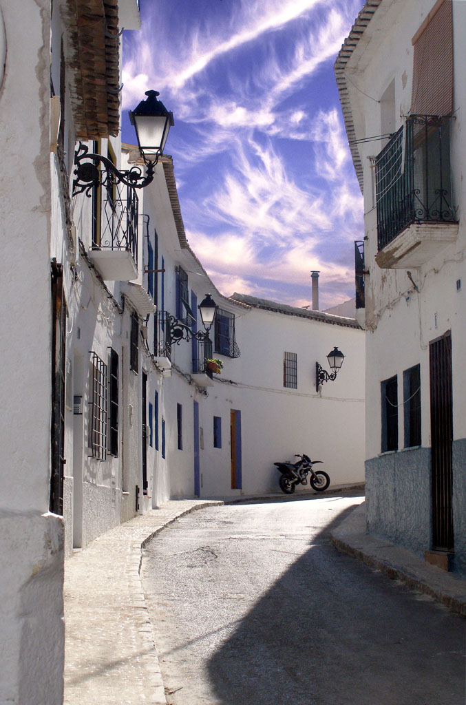
A narrow street in Altea's old town. 2007-03-11. Astronautilus / Commons, CC BY 2.0.
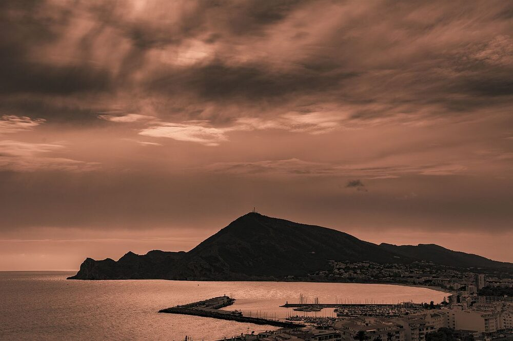
Sierra Helada seen across the coast from Altea. Source date: 2013-12-17 13:10:15. Aglaya Photography by Armando Gonzalez Alameda / Commons, CC BY-SA 4.0.
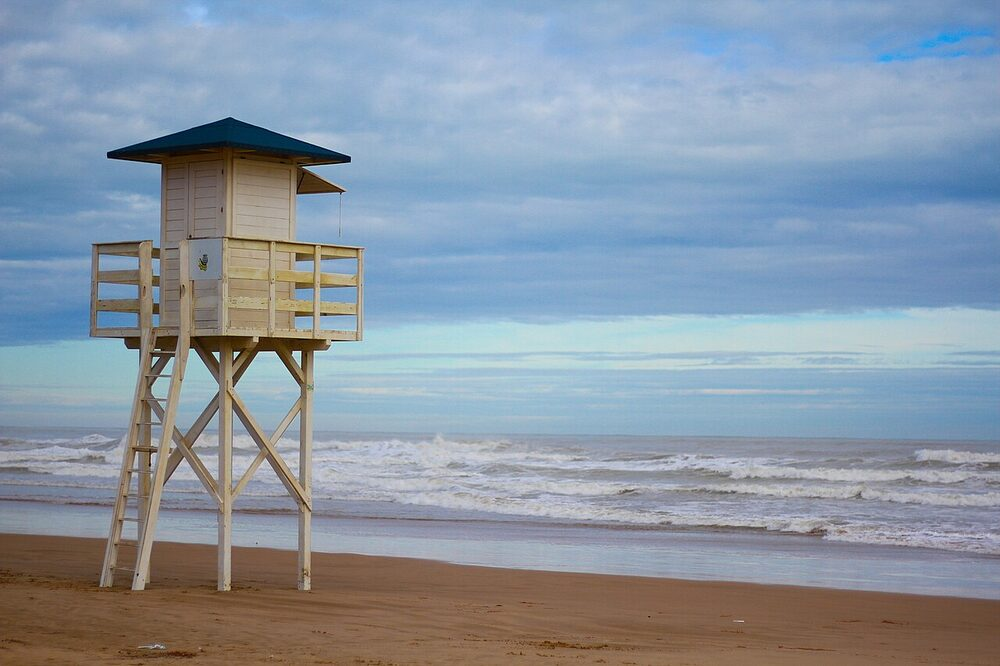
Dénia beach. Source date: 20 December 2016, 18:22:49 (UTC). Noah Stride / Commons, CC BY 3.0.
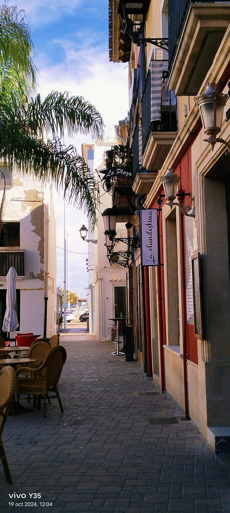
A daytime street in Baix la Mar, Dénia. Source date: 2024-10-19 12:04:52. Siley / Commons, CC0.
Town character
Dénia has a permanent food market, a former fishing neighbourhood and documented winter restaurant activity. Altea has a hilltop old town, waterfront, galleries and arts institutions. These features support different town experiences; proximity to Benidorm alone does not determine either town’s atmosphere.
British resort / expat influence
Both towns have international residents and visitors. British pub dominance has not been measured. Local reporting puts UK nationals at about 2.8% of Dénia’s registered residents at the end of 2024. This figure does not measure winter tourists or neighbourhood-level atmosphere.
Winter restaurants and services
Dénia’s council recorded 43 venues in its February–March 2026 tapas route. The 2027 programme and opening dates are unconfirmed. Altea’s Bon Vent publishes September–June hours; Oustau’s seasonal timetable omits January–February.
Walking, dogs and the house
Dénia’s centre and Baix la Mar provide access to town restaurants; Marineta Cassiana is a coastal search area. Outer Les Rotes is farther from the centre. In Altea, walking distances and gradients from hillside villas and Altea Hills require property-level checks.
Temperature and journey: Alicante is south of both towns and especially distant from Dénia. These are regional reference highs, not exact local normals or proof of an advantage over La Herradura. Dénia 17h04 · Altea 17h17.
16.8 / 17.7°CJanuary / February average highsMálaga Airport · 1981–2010
La Herradura from Cerro Gordo, July 2007. Emilio Morales Barbero / Wikimedia Commons, public domain. Historic summer landscape photograph; not winter-weather evidence.
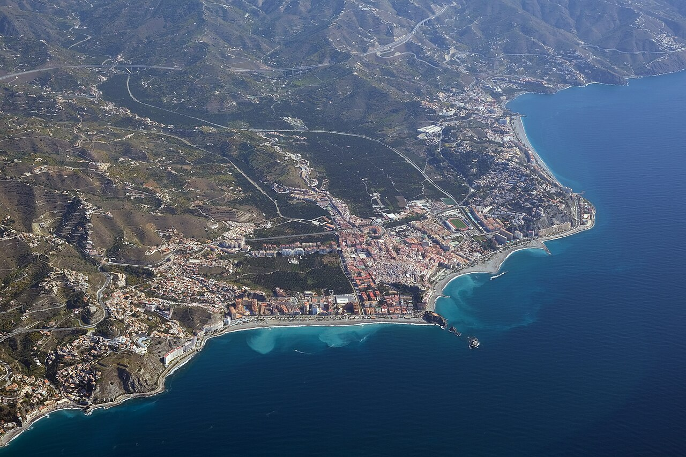
Almuñécar coast from the air. 2021-04-03 12:32:48. kallerna / Commons, CC BY-SA 4.0.
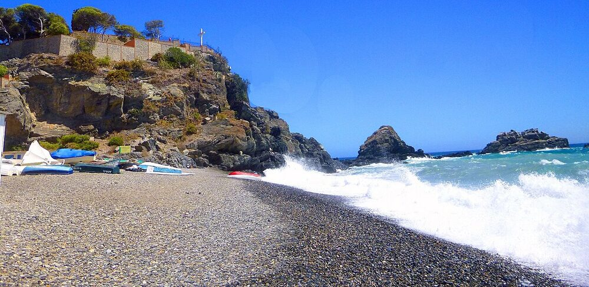
San Cristóbal beach, Almuñécar. Source date: 2023-08-09. Zarateman / Commons, CC0.
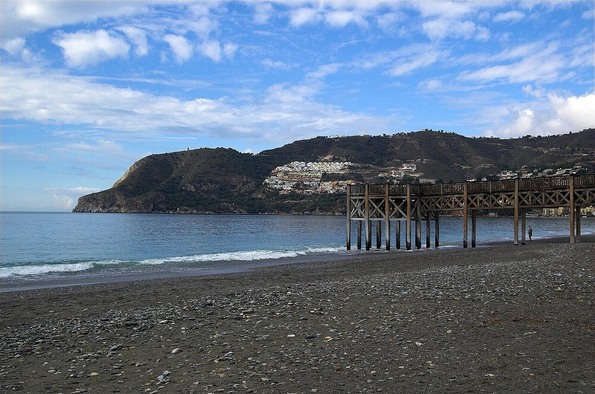
La Herradura beach. Source date: 2007-01-31. Zangarreon / Commons, CC BY-SA 4.0.
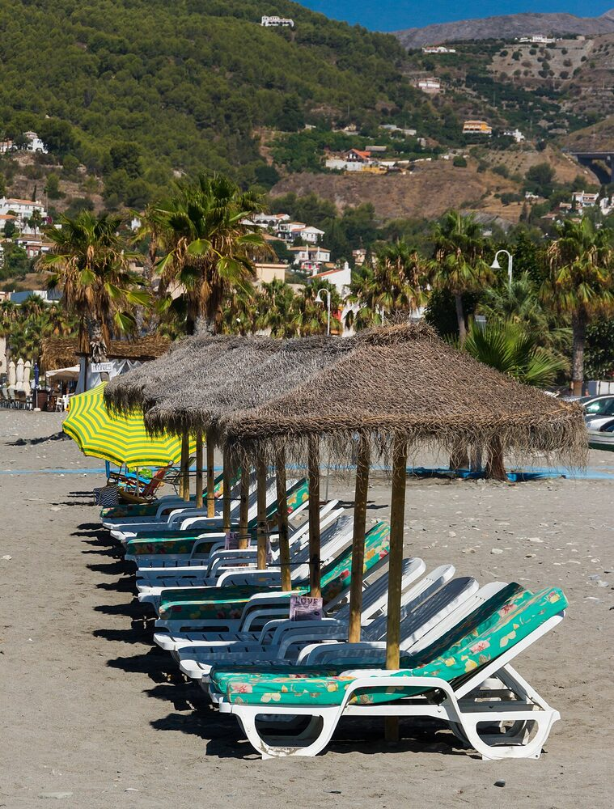
La Herradura seafront. Source date: 2014-08-11. Jebulon / Commons, CC0.
Town character
La Herradura is arranged around a bay with a waterfront promenade. Almuñécar is the larger town comparison. La Herradura remains under consideration for a second stay, subject to accommodation and winter service checks.
British resort / expat influence
The area has international residents and visitors. British visitor share has not been verified. The assessment is based on the bay and town layout; there is insufficient evidence to rank its social atmosphere above Dénia’s.
Winter restaurants and services
Winter restaurant opening and choice within walking distance of a rental remain unverified. No house has been confirmed to meet all requirements.
Walking, dogs and the house
The promenade and public town streets provide routes for accompanied dog walks; beach access is separate. Garden villas above the bay may involve steep walks. Exact routes, gradients and pavements need checking.
Temperature and journey: Málaga is a south-coast benchmark, not a measured La Herradura microclimate. The route is just over a strict 20-hour driving limit. La Herradura 20h08 · slightly over cap.
16.3 / 17.0°CJanuary / February average highsFaro · 1991–2020
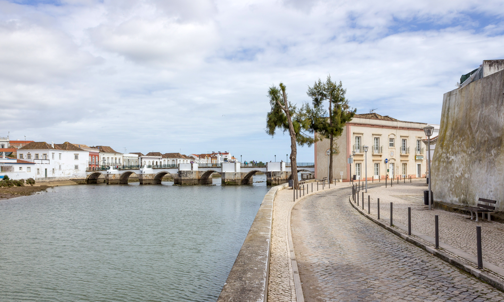
Tavira, April 2014. Dmitry Tonkonog / Wikimedia Commons, CC BY-SA 3.0. Displayed without cropping. Photograph does not establish winter conditions.Cabanas de Tavira waterfront boardwalk. Taken on 18 September 2011. James Castle / Commons, CC BY-SA 3.0.Small boats on Fuseta's lagoon waterfront. 2023-05-06. SaffronOak / Commons, CC BY-SA 4.0.Blue-and-white village houses, Cacela Velha. 2024-10-06 09:48. Globetrotteur17... Ici, là-bas ou ailleurs... from La Rochelle, FRANCE / Commons, CC BY-SA 2.0.
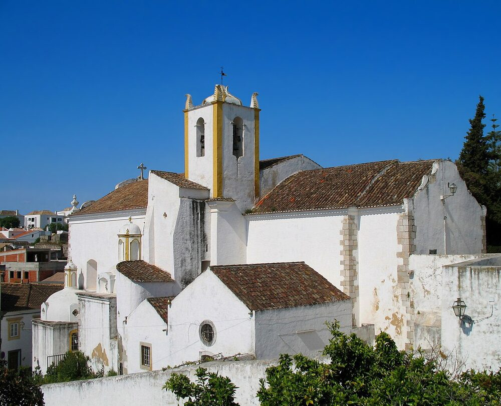
Igreja de Santiago and Tavira town rooftops. Source date: Taken on 15 April 2007. Marc Ryckaert (MJJR) (Photograph edited by Vassil) / Commons, CC BY 2.5.
Town character
Tavira has a historic centre and riverfront. Fuseta is a smaller lagoon-front town. A garden-house listing has been identified in Cabanas. Evidence for Cacela Velha as a long-stay base is limited; it remains a day-visit option.
British resort / expat influence
British visitor shares have not been verified for these towns. Neighbourhood-level atmosphere and winter restaurant choice require further assessment.
Winter restaurants and services
Tavira is the first location to investigate for winter services and dining. Evidence of winter restaurant choice in the smaller villages is more limited. Summer photographs do not establish winter opening.
Walking, dogs and the house
Tavira is on a river; Cabanas and Fuseta face a lagoon. Mainland waterfront walks are different from walking directly onto an ocean beach. Boats, island beaches, saltpans and dog access need separate checks.
Temperature and journey: Faro is a regional climate reference. The measured Tavira journey exceeds the 20-hour driving limit before stops. It is retained as a comparison. Tavira 21h00 · over cap.
16.9 / 17.6°CJanuary / February average highsAlmería Airport · 1981–2010
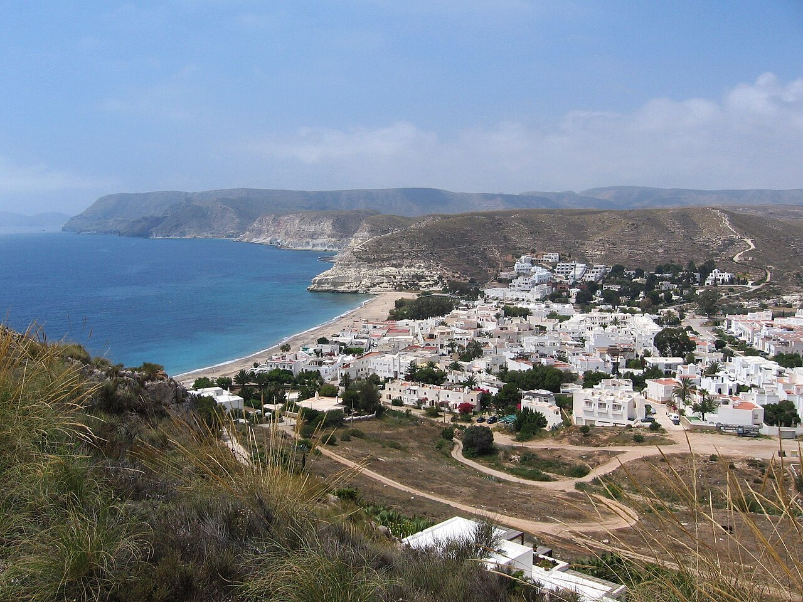
Agua Amarga village and bay. Taken on 13 May 2008. isol / Commons, CC BY-SA 3.0.San José, Níjar, on the Cabo de Gata coast. 2011-08-20. Benreis / Commons, CC BY-SA 3.0.
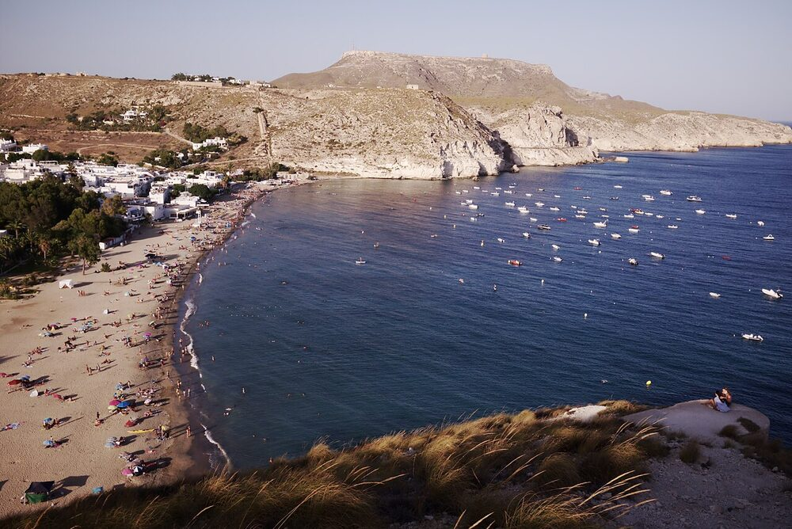
Agua Amarga beach. Source date: 2020-09-11. Nicolas Vigier / Commons, CC0.
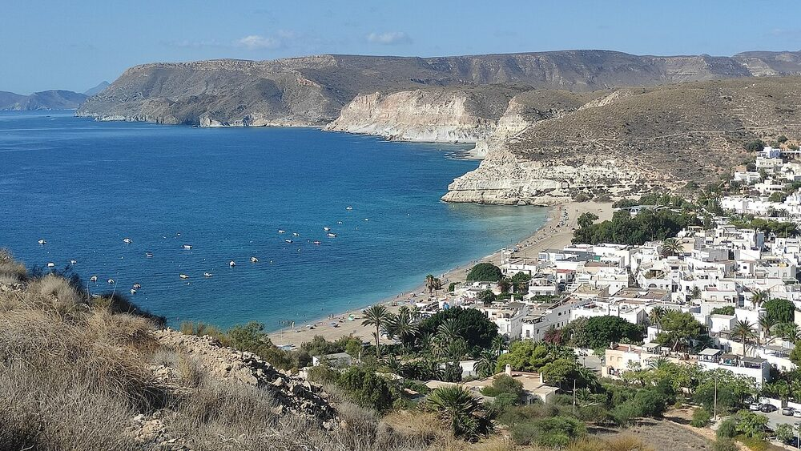
Agua Amarga from the railway hills. Source date: 2024-09-06 11:00:11. MdeVicente / Commons, CC0.
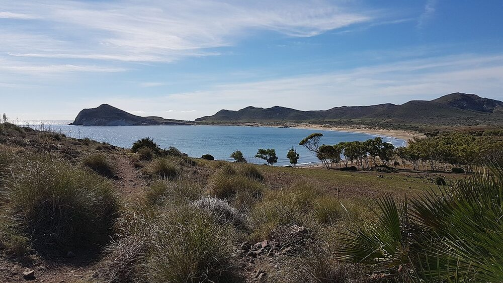
Playa de los Genoveses near San José. Source date: 2018-11-02 11:12:38. José Antonio JG / Commons, CC BY-SA 4.0.
Town character
Agua Amarga and San José are separate coastal villages in the Cabo de Gata area. Their rocky coastline differs from Cap Ferret’s pine-backed Atlantic setting. Winter restaurant choice and social atmosphere remain insufficiently verified.
British resort / expat influence
No reliable visitor-nationality figures or winter atmosphere assessment were established for either village.
Winter restaurants and services
La Villa is in Agua Amarga; 4nudos is in San José. Published seasonal information does not confirm January–February operation or the range of restaurants available for a long stay.
Walking, dogs and the house
No house-and-garden match or complete daily dog-walking route has been verified in either village. Access rules on the protected coast need checking before selecting a rental.
Temperature and journey: Almería averages 24 / 25mm of January / February rain, below most earlier reference stations. These rainfall figures do not establish wind shelter or higher temperatures at a particular cove. Agua Amarga 20h04 · just over cap.
16.0 / 16.8°CJanuary / February average highsCádiz · 1981–2010
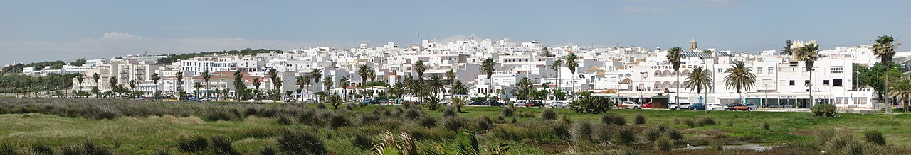
Conil de la Frontera town panorama. 2011-05-11. Aconcagua (talk) / Commons, CC BY-SA 3.0.
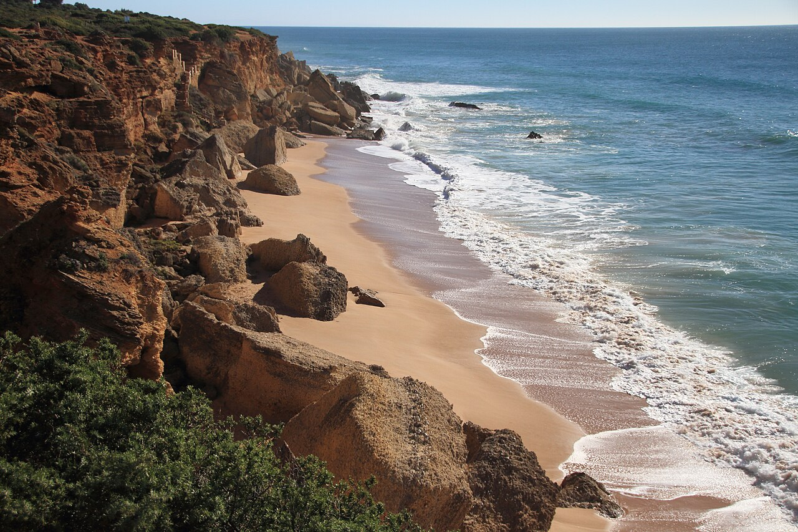
The coves and cliffs of Roche, Conil. 2018-01-01 15:04:47. PEPE GADEIRAS / Commons, CC BY-SA 4.0.
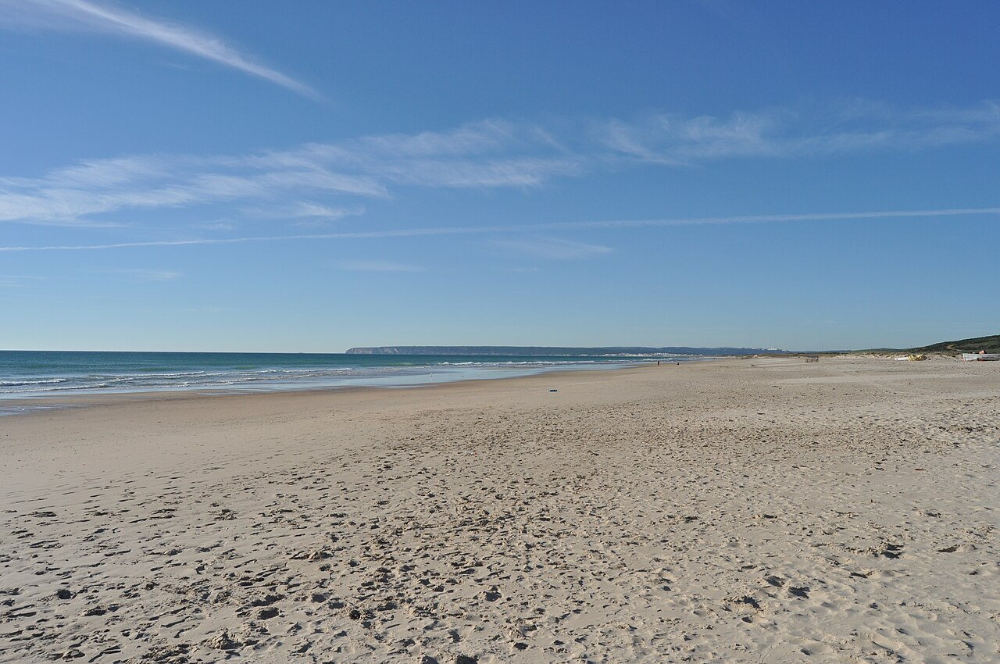
The broad beach at Zahara de los Atunes. 2015-11-06 17:35. Luis Rogelio HM / Commons, CC BY-SA 2.0.
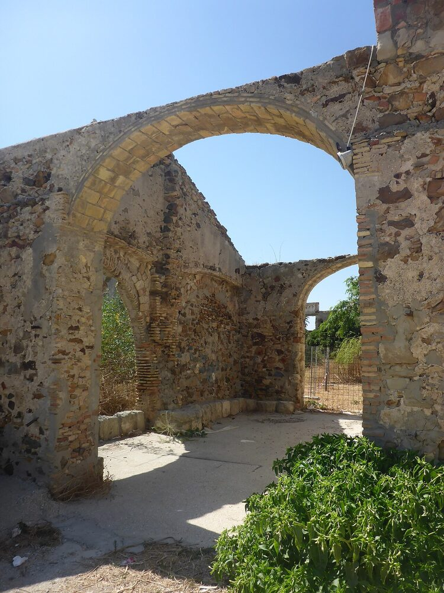
Castillo de las Almadrabas in Zahara de los Atunes. Source date: 2017-07-29 16:46:37. El Pantera / Commons, CC BY-SA 4.0.
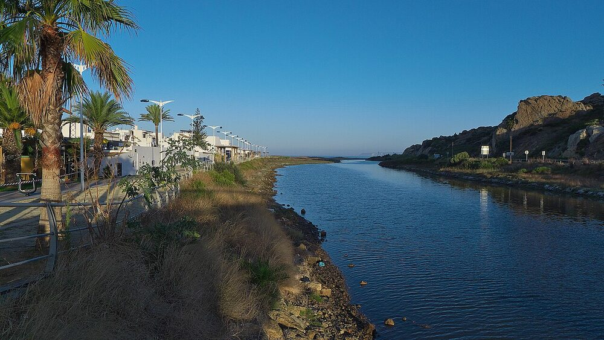
Río Cachón in Zahara de los Atunes. Source date: 2014-08. Jose Luis Filpo Cabana / Commons, CC BY 3.0.
Town character
Conil town is the first location to assess for walking access to restaurants. Roche has pinewoods and garden-villa developments. A town-edge house listing has been identified in Zahara. Restaurant and beach access must be checked separately for each location.
British resort / expat influence
Visitor nationality shares have not been verified. Descriptions of local character are assessments. Restaurant walking distances from private villa developments remain a separate requirement.
Winter restaurants and services
Pradillo in Zahara has a published schedule covering 2026; 2027 opening dates are unconfirmed. Winter restaurant opening in Conil and walking access from Roche rentals still need verification.
Walking, dogs and the house
Conil’s published rules allow animals on urban beaches outside May–October, while natural beaches are prohibited without authorisation. Its animal ordinance requires dogs over 20kg to be muzzled with a resistant non-extending lead. Rules cannot be carried across to Zahara.
Temperature and journey: Cádiz is a regional climate reference. Wind exposure needs checking at each property, along with its exact address, garden boundaries, heating and walking routes to open restaurants. Conil 20h55 · over cap.
Private house with an exclusive garden, with boundaries checked.
Roughly 15 minutes’ real walk to open restaurants and coast, including gradient and pavements.
Written pet acceptance, effective heating, and a sunny sheltered outdoor space.
Confirmed winter availability, total long-stay price, utilities and cancellation terms.
Unverified details
No property has been verified against all requirements. Listing descriptions need confirmation of pet terms, garden boundaries and walking routes. River or lagoon access is not equivalent to access to an ocean beach.
Four previously identified property listings are documented with outstanding checks. No booking or provider enquiry has been made.
Climate figures come from AEMET and IPMA. Station locations and reference periods are stated; the figures are not forecasts for individual towns. Practical details use official local sources and restaurant websites. Atmosphere assessments are identified separately from measured data.
Individual links sit beside the claims. The earlier detailed report retains full route, dog-rule and house-lead context. Restaurant evidence from 2026 does not guarantee 2027 opening. No reliable winter visitor-nationality survey was established.
All images are real location photographs with source and licence attribution. Display proportions are preserved. Full photograph credits.


{kind=link}
{kind=link}
.jpg){kind=link}
.jpeg){kind=link}
{kind=link}
{kind=link}
{kind=link}
{kind=link}
{kind=link}
{kind=link}
{kind=link}
{kind=link}
{kind=link}
.jpg){kind=link}
{kind=link}
{kind=link}
.jpg){kind=link}
{kind=link}
{kind=link}
{kind=link}
{kind=link}
{kind=link}
.jpg){kind=link}
{kind=link}
{kind=link}